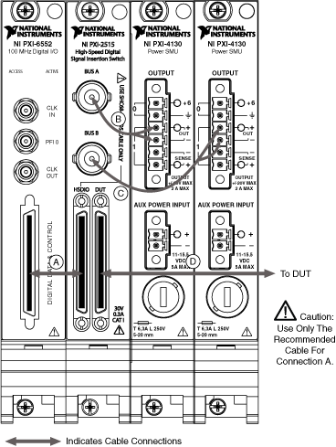

NI PXI/PXIe-2515 Intended Use
The two analog buses of the NI PXI/PXIe-2515 (NI 2515) are intended to facilitate connectivity in performing DC parametric measurements. The analog buses of the NI 2515 are not intended for high-bandwidth analog measurements (for example, rise time and skew). Refer to the following sections for more information about the intended use of the NI 2515.
You can connect the NI 2515 to one supported NI high-speed DIO device and up to two other instruments. Refer to NI PXI/PXIe-2515 Analog Channel Expansion if your system requires the connection of more than two other instruments. The NI 2515 is intended for use with any supported single-ended NI high-speed DIO device (for example, the NI 654x or the NI 655x), and it is not intended for use with a low-voltage differential signaling (LVDS) NI high-speed DIO device (for example, the NI 656x). Refer to the following figure and the NI 2515 Signal Connections table for an example of the intended use of the NI 2515 in a system.

 |
Note Slot placement of the modules within the chassis varies depending on the slot compatibility of your system.
|
|
Note NI recommends placing your supported NI high-speed DIO device in the chassis slot
immediately to the left of the NI 2515. Use caution when inserting or removing a device immediately
to the left of the NI 2515 when the NI SHC68-C68-D5 cable is connected to the NI 2515, as the cable
connector may overlap slightly into the space of that slot. |
Refer to the following table to select accessories that connect the NI 2515 to your system.
| Connection Indicated in Intended Use Diagram |
Cable Connection |
Recommended Accessories |
Notes |
| A |
VHDCI connector on supported NI high-speed DIO device to left VHDCI connector on NI 2515 |
NI SHC68-C68-D5 0.5m Shielded Single-Ended Cable for High-Speed Digital Signal Insertion Switch |
 |
Caution Use only the NI SHC68-C68-D5 cable to connect the supported NI high-speed DIO device
to the NI 2515. The cable translates the pinout of the supported NI high-speed DIO device to the
HSDIO connector on the NI 2515 so that the pinout of the DUT connector on the NI 2515 matches
that of the supported NI high-speed DIO device. |
|
| B and C |
BNC connectors on NI 2515 to parametric measurement devices |
— |
There is not a designated cable to connect the BNC connectors on the NI 2515 to parametric measurement devices. Select a cable that fits the connectivity needs of your system.
|
Note The outer shields of both analog bus channels (B and C in the diagram) are connected to chassis ground. Therefore, the negative lead of any analog bus channel must be at chassis ground. |
|
| D |
Right VHDCI connector on NI 2515 to DUT |
You have the following options:
- NI CB-2162 connector block and NI SHC68-C68-D4 Shielded Single-Ended Cable for High-Speed Digital Devices
- NI SMB-2163 breakout box and NI SHC68-C68-D4 Shielded Single-Ended Cable for High-Speed Digital Devices
- NI SHC68-H1X38 Shielded Single-Ended Flying-Lead Cable
|
Refer to ni.com/manuals for information on the use of these signal connection options.
|